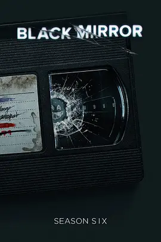

7.1
黑镜 第六季
Black Mirror Season 6
2023
美国
评分 7.1
导演:
阿丽·潘基乌 / 萨姆·米勒 / 约翰·克劳利 / 乌塔·布里泽维茨 / 托比·海恩斯
演员:
安妮·墨菲 / 萨尔玛·海耶克 / 迈克尔·塞拉 / 希米什·帕特尔 / 阿维·纳什
类型:
剧情,惊悚,科幻
剧情简介
本季在延续《黑镜》核心气质的同时，重塑其边界——五个独立故事以截然不同的风格展开，有的黑色幽默，有的阴郁压迫，有的怪诞恐怖，让熟悉的“科技讽刺”被拓展到更广阔的叙事空间。在《乔安真可怕》中，普通白领乔安的生活被一款流媒体剧集“实时”改编成夸张戏剧。办公室的尴尬、餐桌上的争吵、内心的犹豫全被无限放大，她在现实与影像的双重挤压下逐渐失控。凌厉的剪辑、夸张的表演和讽刺意味的场面不断提醒观众：在数字时代，每个人都可能在不知情的情况下成为被消费的对象。《亨利湖》则转向阴冷现实主义。纪录片团队来到偏远小镇，追寻一段尘封的连环犯罪真相。静谧湖面、陈旧木屋与当地人刻意的沉默共同构成一层压抑氛围。随着调查深入，那些看似破碎的线索逐渐拼接成更残酷的事实，而镜头背后关于“真实犯罪”行业的批判也一点点浮现。《超越海洋》中，两名宇航员在太空任务期间通过远程替身维持与地球生活的联系。金黄色的田野、宁静的夜风与家庭的温度本应带来慰藉，却在一次突发事件后急速坠入绝望。故事精密控制节奏，在长久的寂静中堆积情绪，让角色的孤独与愤怒逐格渗出。《迷雾之日》转向更怪诞的路径。追逐狗仔的明星女演员在逃亡途中卷入一场超现实的危机。暴雨后的山林、压抑的藏身处、闪着冷光的变异景象交替出现，逐渐扭曲观众对“真实”与“表演”的感知。肢体变形与混乱追逐让这一集呈现出强烈的不适感，几乎是本季最直观的恐怖篇章。在《恶魔79》中，一名百货店员工被迫与一位形象夸张的“恶魔”搭档，为阻止灾难而执行一系列令人胆寒的行动。故事在荒诞与恐怖之间迅速切换，拥挤街道的喧嚣、地下室的回响、预言般的影像共同推高紧张感。越接近尾声，角色的选择越显得沉重而无法回避。整季风格多元，有时写实、有时荒诞，但共同指向当代社会中被扭曲的权力、欲望与恐惧。它不再仅仅审视科技，而是更直接地触碰人性在极端情境下被放大的裂缝。